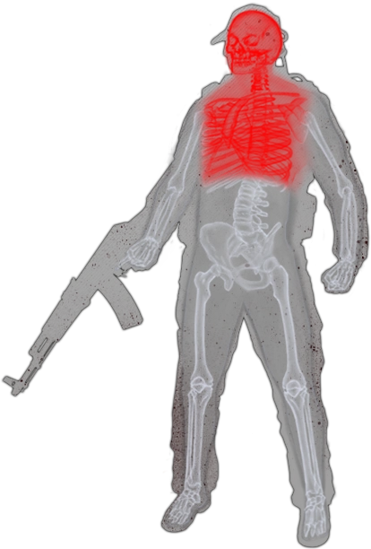
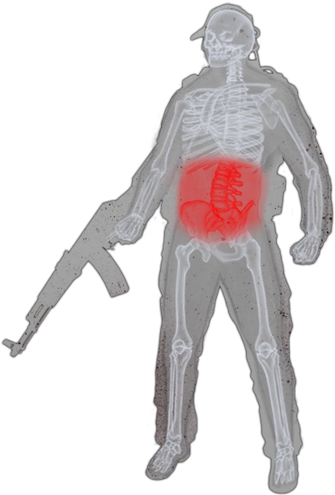
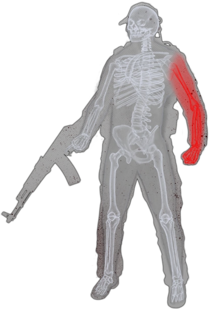
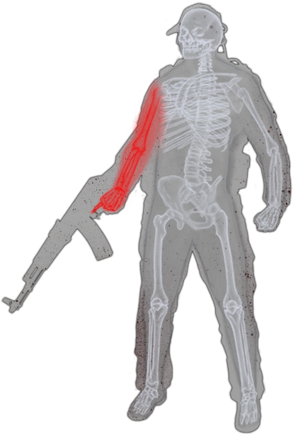
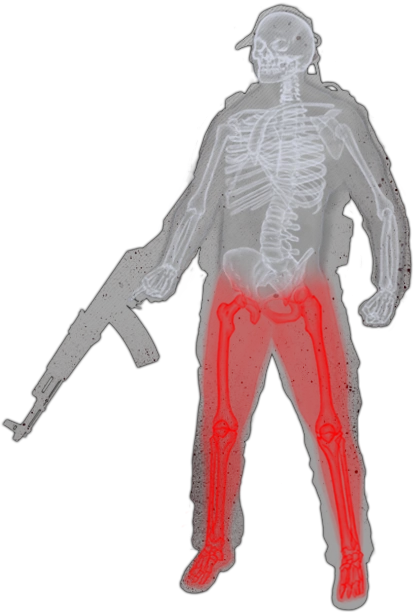

General Information
Part Specific Status Effects
Basic Temporary Status Effects
    Thorax/Head: Cannot be fractured. Cannot be fixed with a Surgical kit if their HP reach Zero. If their HP reach zero, you die. Note: if they zero out by bleeding, you will not die, but any further damage will kill you.
Stomach: Cannot be fractured. When destroyed, increases hydration and energy loss.
Right arm: When Fractured/Destroyed, Using items and searching containers is slower. Reloading, drawing and aiming weapons is even slower.
Left arm: When Fractured/Destroyed, Reloading, Drawing and aiming weapons is slower. Using items and searching containers is even slower.
Legs: When Fractured/Destroyed, Each leg reduces your speed by 45%. Also decreases jump height, and you take damage to the leg that is Fractured when you sprint. If the leg is destroyed, it will share the damage to the rest of the limbs instead.
Light Bleeding
Heavy Bleeding
Fracture
Poisoning
On Painkillers
Pain
Fresh Wound
Overweight
Critically Overweight
Dehydration
Fatigue